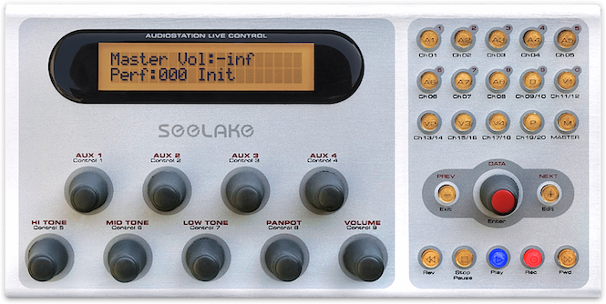
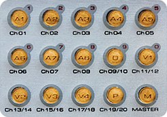
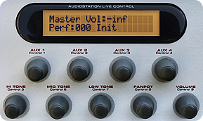
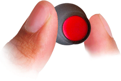
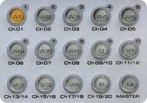
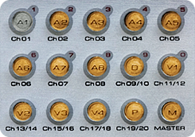
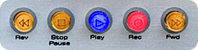
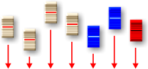

LiveControl è parte integrante dell’apparecchio e consente di controllare AudioStation a distanza nelle esibizioni dal vivo, senza bisogno di utilizzare monitor, tastiera e mouse.
Con LiveControl è infatti possibile:
Utilizzare LiveControl è davvero semplice ed intuitivo. Infatti, anche se a prima vista può non trasparire chiaramente, l’operatività è quella tipica di un mixer digitale...
Molto semplicemente, i pulsanti dei diversi canali selezionano il canale del mixer sul quale operare.
Una volta scelto il canale, con le manopole Aux 1, 2, 3 e 4, Hi, Mid e Low, Panpot e Volume è possibile effettuare le regolazioni desiderate.
 Il display visualizza automaticamente il canale del mixer selezionato, il parametro sul quale si sta operando ed il relativo valore.
Il canale selezionato è segnalato anche dalla luce intermittente del relativo pulsante.

Per facilitare le regolazioni, le manopole di LiveControl sono sensibili alla velocità di rotazione: ruotate lentamente producono cambiamenti unitari; aumentando la velocità generano progressivamente variazioni maggiori (di 10 o 100 unità).
Grazie alla trasmissione dati ad alta risoluzione le variazioni avvengono in modo naturale, ”senza scatti”.
Ogni cambiamento effettuato su LiveControl viene automaticamente riportato sulla console di missaggio e viceversa.
La comunicazione bi-direzionale, il protocollo di comunicazione ad alta risoluzione, le manopole sensibili alla velocità di rotazione e i tasti di selezione diretta, consentono di operare con un vero feeling analogico.
Un doppio click sul pulsante del canale desiderato attiva/disattiva la funzione Solo del canale.
Quando un canale viene posto in Solo i pulsanti degli altri canali vengono spenti automaticamente. Lo stato di Solo viene segnalato anche nel display.
Un click prolungato sul pulsante del canale desiderato attiva/disattiva la funzione Mute del canale.
Quando un canale è posto in Mute il suo pulsante viene spento. Lo stato di Mute viene segnalato anche nel display.
Oltre che via MIDI (come spiegato nella pagina Digital Mixer), le patch di ogni canale e le performance (le scene della console) possono essere comodamente richiamate con LiveControl.
E’ sufficiente selezionare il canale desiderato, girare la manopola Data per scegliere il setup da caricare, quindi fare click sulla manopola stessa per caricarlo in memoria. Per caricare le scene dell’intera console (performance) è sufficiente operare sul canale Master.
In alternativa, è possibile utilizzare i pulsanti di selezione dei canali per digitare direttamente il numero del setup desiderato, oppure selezionare il setup successivo o precedente con gli apposti pulsanti Next (+) e Prev (-).
Mentre una combinazione di strumenti ed effetti è in uso è possibile scegliere un secondo setup e caricarlo in memoria al momento opportuno, con un semplice click.

LiveControl ha anche un gruppo di pulsanti dedicati al controllo del player/recorder audio/MIDI incorporato nella console di missaggio.
Gli stessi pulsanti possono essere utilizzati anche per controllare il click audio/MIDI e, addirittura, sequencer, drum/groove machine, sia in formato plug-in, sia hardware.
Premendo un apposito pulsante, LiveControl si trasforma in una versatile e potente superficie di controllo per regolare in tempo reale i parametri dei plug-in.
Distintamente per ogni canale della console e con le stesse modalità descritte nella pagina VST Player, è possibile assegnare a ogni manopola LiveControl uno o più parametri, anche di plug-in differenti. In questo modo possono essere programmati fino a 135 controlli per ogni scena!
Inoltre, grazie alla modalità di regolazione con incremento relativo dei valori, le manopole di LiveControl sono sempre perfettamente agganciate ai parametri da regolare. Così, cambiando canale della console o entrando e uscendo dalla modalità Superficie di controllo, non si incorrerà ma in spiacevoli salti di valore.
Anche se, come spiegato nella pagina MIDI Patchbay, AudioStation è dotata di sofisticati accorgimenti atti a prevenire il problema delle cosiddette note sospese, nel caso di malfunzionamento di una master keyboard o di un cavo MIDI non è escluso che questa situazione possa verificarsi.
In caso di necessità è dunque disponibile una avanzata funzione di MIDI Panic globale intelligente, che agisce simultaneamente sugli strumenti software caricati nei canali della console e sugli strumenti hardware esterni. Con un semplice doppio click sul pulsante Master tutte le note sospese (e solo esse!) verranno spente immediatamente, senza inibire o limitare in alcuno modo l’esecuzione.

Come spiegato nella pagina Digital Mixer, AudioStation ha un’utile funzione di fadeout automatico con durata programmabile per ogni setup, applicabile ai singoli canali della console o al Master.
Per attivare il fadeout è’ sufficiente selezionare il canale desiderato e mantenere premuto per circa 2 secondi il tasto Prev/Exit (-).
Oltre a regolare volumi, panpot, toni ed aux send, con LiveControl è possibile modificare “al volo” il contenuto di patch e performance, o crearne di nuove.
Senza bisogno di utilizzare monitor, tastiera e mouse, si possono scegliere i plug-in ed i relativi preset, regolare i più importanti parametri della patchbay MIDI, i bus audio di uscita e, infine, salvare le impostazioni.
{kind=link}